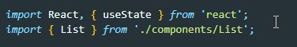

useContext - позволяет использовать контекст в React и не передавать пропсы от компоненты к компоненте по цепочке
1 Создаем контекст
2 Далее оборачиваем наше приложение в только что созданный контекст. Не забываем использовать метод Provider
3 Создаем state
4 Теперь в провайдере нужно указать атрибут value и передать туда наш state
5 В компоненте где будем использовать контекст импортируем контекст и хук useState
6 Поулчаем state вызвав хук useContext
Теперь state - это объект у которого два ключа - состояние и метод изменения этого состояния